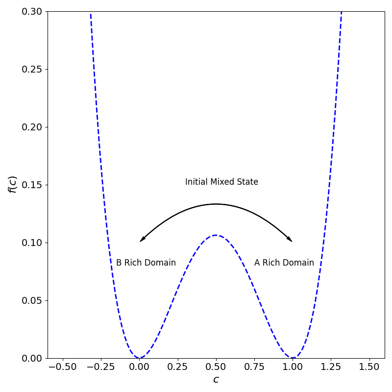

- Generated by
 1.9.3
1.9.3
|
SpinDec2
PX915 group A software development project for HetSys in modelling spinodal decomposition
|
The bulk free energy density \(f\), can be defined in SpinDec2 to be any polynomial which is controlled via the user in the input.txt file. The user defines the polynomial coefficents such that:
$$ f\left(c_{i,j}\right) = \sum_{m = 0}^{N-1} a_{m} \left(c_{i,j}\right)^{m}, $$where \(a\) are the polynomial coefficents, and \(c_{i,j}\) is the order paramter at grid point \(i,j\). A common form for \(f\) is often a quartic polynomial, which exhibts a double well nature, in whcih the \(A\) and \(B\) rich domains are defined by areas in which minmise the bulk free energy density. An exmaple of this is for \(f(c) = Ac(1-c)^2 \), where \(A\) is some scale factor that sets the rough height of the maxima at \(c = 0.5\) w.r.t to the height of the two minimas at \(c = 0\) and \(c = 1\).

So for this example, we expect the binary alloy to decompose into regions which have order paramter values close to 1 or 0, however if the user inputs an alternative polynomial form, these values will differ depending on the locaion of the minimas.
The total free energy is defined as the volume integral of the sum of the interfacial energy \(\frac{\kappa}{2}(\nabla c)^2\) and bulk free energy density \(f(c)\):
$$ F(t) = \int_{V} \left[ f\left(c(x,y,t)\right) + \frac{1}{2}\kappa \left(\nabla c(x,y,t)\right)^2 \right] \mathrm{d}V. $$This integral is calculted in SpinDec2 using the trapezium rule:
$$ F(t) = \sum_i \sum_j \left[ f\left(c_{i,j}(t)\right) + \frac{1}{2}\kappa \left(P_{i,j}(t)\right)^2 \right] \Delta x \Delta y, $$ $$ P_{i,j}(t) = \left(\frac{c_{i+1, j}(t) - c_{i-1, j}(t)}{2\Delta x}\right)^2 + \left(\frac{c_{i, j+1}(t) - c_{i, j-1}(t)}{2\Delta y} \right)^2, $$where the volume element is taken to be \(dV = dx dy dz = \Delta x \Delta y\). The total free energy is a useful metric for observing at what point the system is in equilibrium, i.e when the change in \(F\) approaches zero.
Authors: Anas Siddiqui, Ben Gosling, Dyaln Morgan, Geraldine Anis, Matyas Parrag